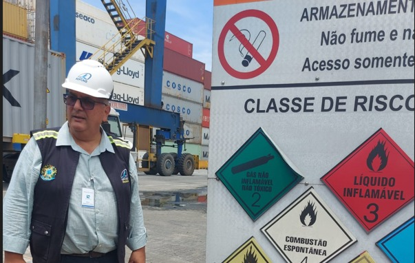

Onde estamos e o que avançamos
INTELIGÊNCIA
Ameaça do terrorismo e do tráfico ilícito nas instalações portuárias.
Modernização das infraestruturas de segurança e dos sistemas de controle.
Coordenação entre diferentes entidades federais, estaduais e portuárias.
Implementação de controle de acesso e vigilância avançada.
Maior eficiência operacional e redução de incidentes.
Confiança de investidores e fortalecimento do comércio exterior.

Trilha Técnica da Fiscalização · SFC / GPF — ANTAQ
56 / 61